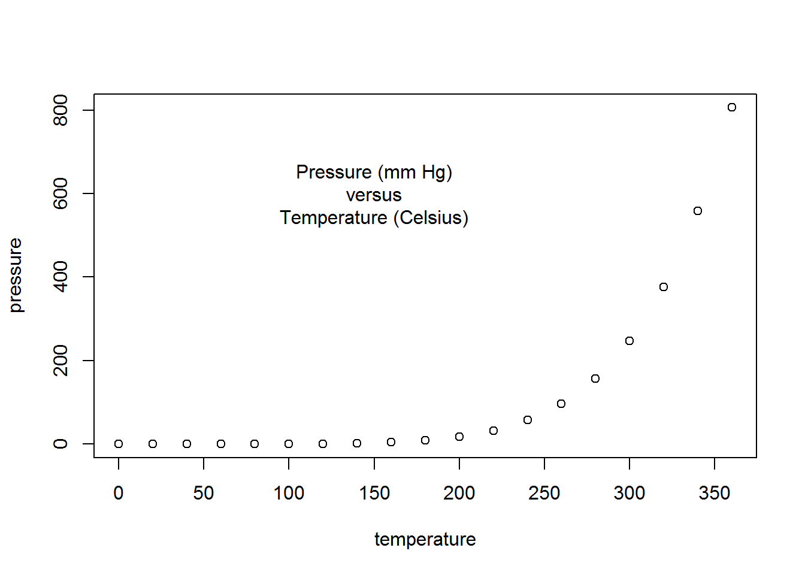
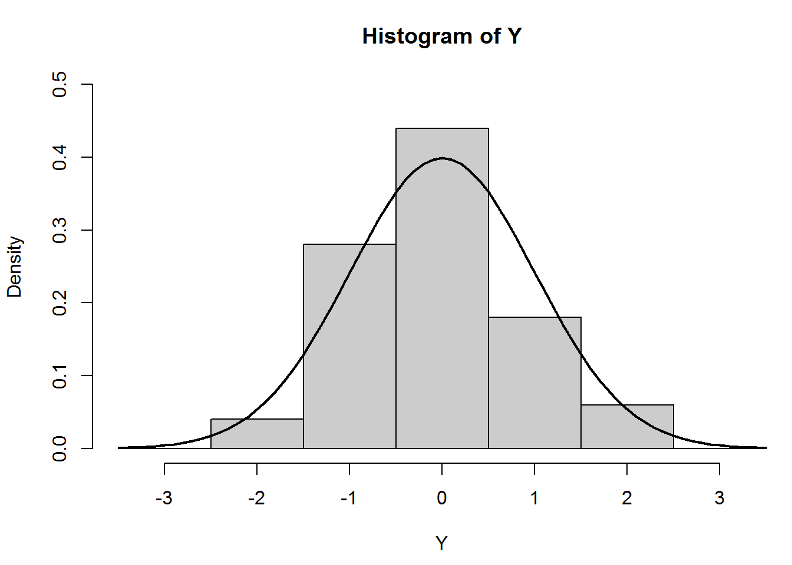
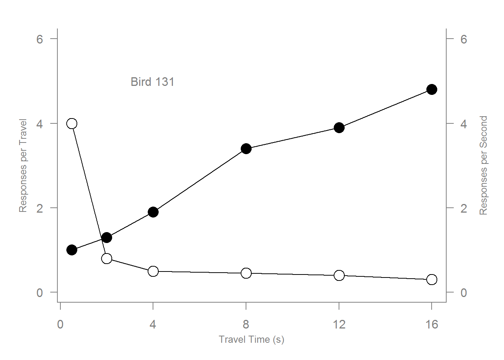
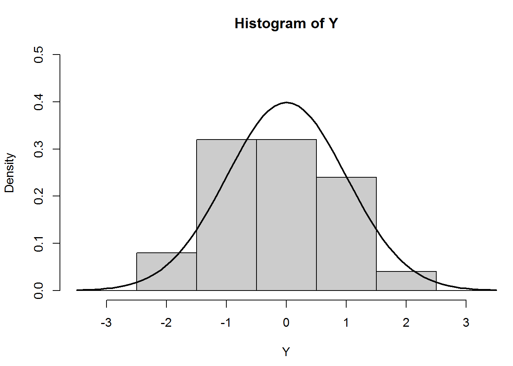
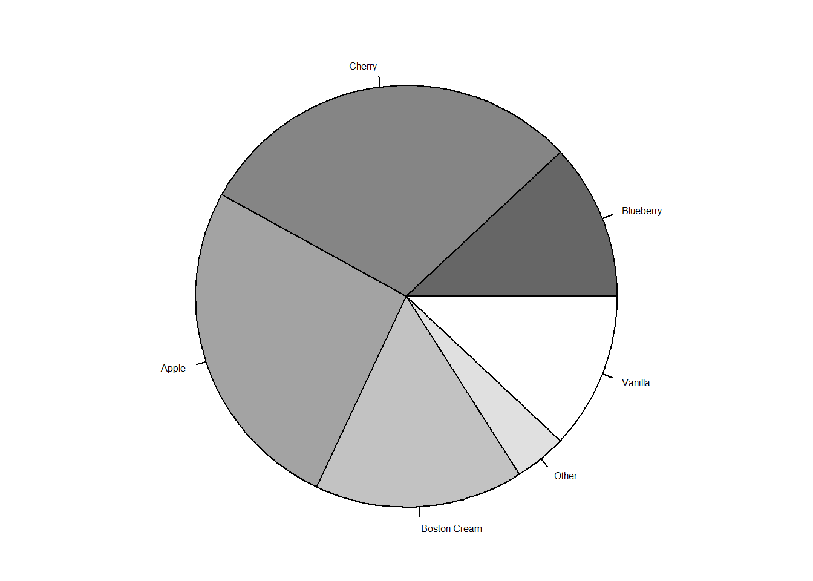
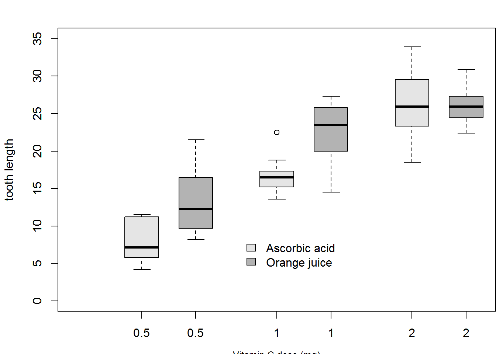

En esta sección, se muestra algunas densidades creadas en R con su respectivo código.
plot(pressure)
text(150, 600,
"Pressure (mm Hg)\nversus\nTemperature (Celsius)")
par(mfrow=c(2, 2))
z <- 2 * volcano # Exaggerate the relief
x <- 10 * (1:nrow(z)) # 10 meter spacing (S to N)
y <- 10 * (1:ncol(z)) # 10 meter spacing (E to W)
# Don't draw the grid lines : border = NA
par(mar=rep(0, 4))
persp(x, y, z, theta = 135, phi = 30, col = "light grey", scale = FALSE,
ltheta = -120, shade = 0.75, border = NA, box = FALSE)
mtext("persp()", side=3, line=-2)
par(mar=c(3, 3, 2, 0.5))
# Note that example(trees) shows more sensible plots!
N <- nrow(trees)
attach(trees)
# Girth is diameter in inches
symbols(Height, Volume, circles=Girth/24, inches=FALSE,
main="", xlab="", ylab="", bg=grey(Girth/max(Girth)))
mtext("symbols()", side=3, line=0.5)
par(mar=rep(0.5, 4))
contour(x, y, z, asp=1, labcex=0.35, axes=FALSE)
rect(0, 0, 870, 620)
mtext("contour()", side=3, line=-1.5)
image(x, y, z, asp=1, col=grey(0.5 + 1:12/24), xlab="", ylab="", axes=FALSE)
rect(min(x)-5, min(y)-5, max(x)+5, max(y)+5)
mtext("image()", side=3, line=-1.5)
Gráfico de dispersión:
# Scatterplot
x <- c(0.5, 2, 4, 8, 12, 16)
y1 <- c(1, 1.3, 1.9, 3.4, 3.9, 4.8)
y2 <- c(4, .8, .5, .45, .4, .3)
par(las=1, mar=c(4, 4, 2, 4))
plot.new()
plot.window(range(x), c(0, 6))
lines(x, y1)
lines(x, y2)
points(x, y1, pch=16, cex=2)
points(x, y2, pch=21, bg="white", cex=2)
par(col="grey50", fg="grey50", col.axis="grey50")
axis(1, at=seq(0, 16, 4))
axis(2, at=seq(0, 6, 2))
axis(4, at=seq(0, 6, 2))
box(bty="u")
mtext("Travel Time (s)", side=1, line=2, cex=0.8)
mtext("Responses per Travel", side=2, line=2, las=0, cex=0.8)
mtext("Responses per Second", side=4, line=2, las=0, cex=0.8)
text(4, 5, "Bird 131")
par(mar=c(5.1, 4.1, 4.1, 2.1), col="black", fg="black", col.axis="black")Histograma:
# Histogram
# Random data
Y <- rnorm(50)
# Make sure no Y exceed [-3.5, 3.5]
Y[Y < -3.5 | Y > 3.5] <- NA
x <- seq(-3.5, 3.5, .1)
dn <- dnorm(x)
par(mar=c(4.5, 4.1, 3.1, 0))
hist(Y, breaks=seq(-3.5, 3.5), ylim=c(0, 0.5),
col="grey80", freq=FALSE)
lines(x, dnorm(x), lwd=2)
par(mar=c(5.1, 4.1, 4.1, 2.1))Barplot:
# Barplot
par(mar=c(2, 3.1, 2, 2.1))
midpts <- barplot(VADeaths, col=grey(0.5 + 1:5/12),
names=rep("", 4))
mtext(sub(" ", "\n", colnames(VADeaths)),
at=midpts, side=1, line=0.5, cex=0.5)
text(rep(midpts, each=5), apply(VADeaths, 2, cumsum) - VADeaths/2,
VADeaths, col=rep(c("white", "black"), times=2:3, cex=0.8))
par(mar=c(5.1, 4.1, 4.1, 2.1))Cuadro de caja:
# Boxplot
par(mar=c(3, 4.1, 2, 0))
boxplot(len ~ dose, data = ToothGrowth,
boxwex = 0.25, at = 1:3 - 0.2,
subset= supp == "VC", col="grey90",
xlab="",
ylab="tooth length", ylim=c(0,35))
mtext("Vitamin C dose (mg)", side=1, line=2.5, cex=0.8)
boxplot(len ~ dose, data = ToothGrowth, add = TRUE,
boxwex = 0.25, at = 1:3 + 0.2,
subset= supp == "OJ", col="grey70")
legend(1.5, 9, c("Ascorbic acid", "Orange juice"), bty="n",
fill = c("grey90", "grey70"))
par(mar=c(5.1, 4.1, 4.1, 2.1))Diagrama circular:
# Piechart
# Example 4 from help(pie)
par(mar=c(0, 2, 1, 2), xpd=FALSE, cex=0.5)
pie.sales <- c(0.12, 0.3, 0.26, 0.16, 0.04, 0.12)
names(pie.sales) <- c("Blueberry", "Cherry",
"Apple", "Boston Cream", "Other", "Vanilla")
pie(pie.sales, col = gray(seq(0.4,1.0,length=6)))
Los anteriores gráficos con sus respectivos códigos fueron tomados como ejemplos para exhibir lo potente, útil y eficiente que son R y Rstudio como lenguaje de programación orientados al cálculo estadístico y a la generación de gráficas.
Chapman & Hall / CRC, agosto de 2005.